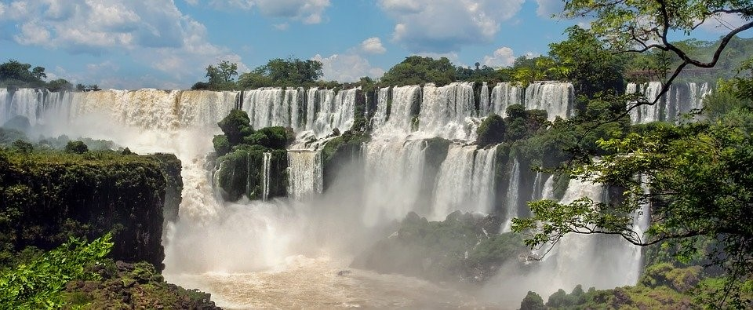

Segundo a ciência, viajar faz bem para o seu corpo, para a sua mente e para as suas emoções. Está comprovado pelos mais
variados tipos de estudos que tirar um tempo de férias tem muitos benefícios por ajudar, de diversas maneiras, a recarregar as energias e refrescar
as ideias. Viajar quebra a rotina, te faz dar uma pausa, esquecer os problemas, as obrigações do trabalho e tirar um tempo para ficar na companhia de quem você mais ama. Isso te ajuda a manter-se feliz e de bem com a vida.
Um estudo da Universidade de Cornell, nos Estados Unidos, sugere que apenas o ato de planejar uma viagem é suficiente para aumentar a felicidade de uma pessoa. Ainda segundo o estudo, a expectativa gerada pela chegada das férias é muito maior que a gerada após a aquisição de um bem físico, por exemplo.
Ou seja, como todos nós bem sabemos, antes mesmo de viajar você já fica feliz.
Cristo Redentor, Rio de Janeiro
Cristo Redentor, Rio de Janeiro
Cristo Redentor é uma estátua que retrata Jesus Cristo, localizada no topo do morro do Corcovado, a 709 metros acima do nível do mar, no Parque Nacional
da Tijuca, com vista para a maior parte da cidade do Rio de Janeiro, Brasil. Em 2007, foi eleito informalmente como uma das sete maravilhas do mundo moderno. Em 2012, a UNESCO considerou o Cristo Redentor como parte da paisagem
do Rio de Janeiro incluída na lista de Patrimônios da Humanidade.
O Cristo Redentor é feito de concreto armado e pedra-sabão. Tem trinta metros de altura, sem contar os oito metros do pedestal, e seus braços se esticam por 28 metros de largura. A estátua pesa 1145 toneladas e é a terceira maior escultura de Cristo no mundo
Porto de Galinhas, Pernambuco, Brasil
Praia de Porto de Galinhas, Pernambuco
Porto de Galinhas é uma praia localizada no distrito homônimo, pertencente ao município de Ipojuca, no estado de Pernambuco, Brasil.
A região possui piscinas de águas claras e mornas formadas entre corais, além de estuários, mangues, areia branca e coqueirais.
Toda a região é muito frequentada por turistas e surfistas de diversas nacionalidades, tendo sido eleita pela revista Viagem e Turismo, da Editora Abril,
como a "Melhor Praia do Brasil" por dez vezes consecutivas.
Há dias ensolarados em todos os meses do ano, mas os meses de abril, maio, junho e julho são os mais chuvosos no litoral de Pernambuco, sendo junho o
mês com os maiores índices pluviométricos. A melhor época vai de setembro a fevereiro, e os meses com mais dias de sol são outubro, novembro e
dezembro.
Torre Eiffel, Paris, França
Torre Eiffel, Paris, França
A Torre Eiffel é uma torre treliça de ferro do século XIX localizada no Champ de Mars, em Paris, a qual se tornou um ícone mundial da França.
A torre, que é o edifício mais alto da cidade, é o monumento pago mais visitado do mundo, com milhões de pessoas frequentando-o anualmente. Nomeada em
homenagem ao seu projetista, o engenheiro Gustave Eiffel, foi construída como o arco de entrada da Exposição Universal de 1889.
Possui 324 metros de altura e fica cerca de 15 centímetros mais alta no verão, devido à dilatação térmica do ferro. A torre tornou-se o símbolo mais proeminente de Paris e da França, sendo parte de cenários de filmes que se passam na cidade.
Cataratas do Iguaçu, Paraná, Brasil
Cataratas do Iguaçu, Paraná, Brasil
Cataratas do Iguaçu é um conjunto de cerca de 275 quedas de água no rio Iguaçu, localizada entre o Parque Nacional do Iguaçu, Paraná, no Brasil, e o Parque Nacional Iguazú em Misiones, na Argentina, na fronteira entre os dois países.
A área total de ambos os parques nacionais corresponde a 250 mil hectares de floresta subtropical e é considerada Patrimônio Natural da Humanidade.
O parque nacional argentino foi criado em 1934, enquanto o parque brasileiro foi inaugurado em 1939. Ambas as áreas de proteção tem o propósito de administrar e preservar o manancial de água que representa essa catarata e o conjunto do meio ambiente ao seu redor. Os parques tanto brasileiro como argentino passaram a ser considerados Patrimônio da Humanidade em 1984 e 1986, respectivamente. Desde 2002, o Parque Nacional do Iguaçu é um dos sítios geológicos brasileiros.
Pirâmides de Gizé
Pirâmides de Gizé, Egito
Necrópole de Gizé, também chamada de Pirâmides de Gizé, é um sítio arqueológico localizado no planalto de Gizé, nos arredores do Cairo, Egito.
Este complexo de monumentos antigos inclui os três complexos de pirâmides conhecidas como as Grandes Pirâmides, a escultura maciça conhecida como a Grande
Esfinge, vários cemitérios, uma vila operária e um complexo industrial.
As pirâmides, que sempre tiveram grande importância como emblemas do antigo Egito no imaginário ocidental, foram popularizadas nos tempos helenísticos,
quando a Grande Pirâmide foi listada por Antípatro de Sídon como uma das Sete Maravilhas do Mundo. É, de longe, a mais antiga das maravilhas do mundo
antigo e a única que ainda existe.